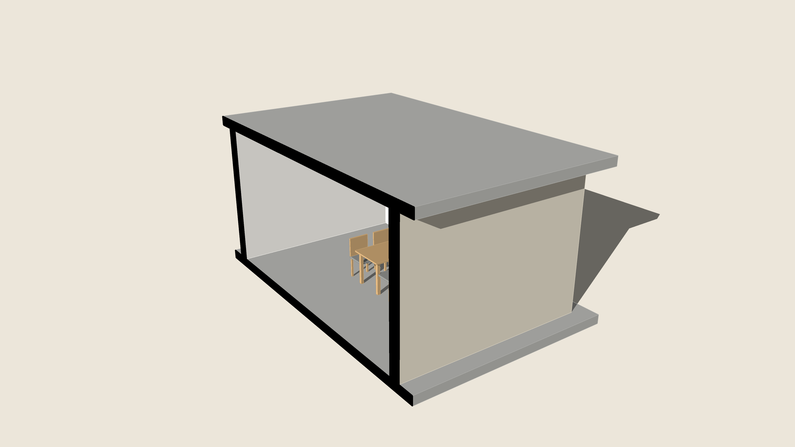
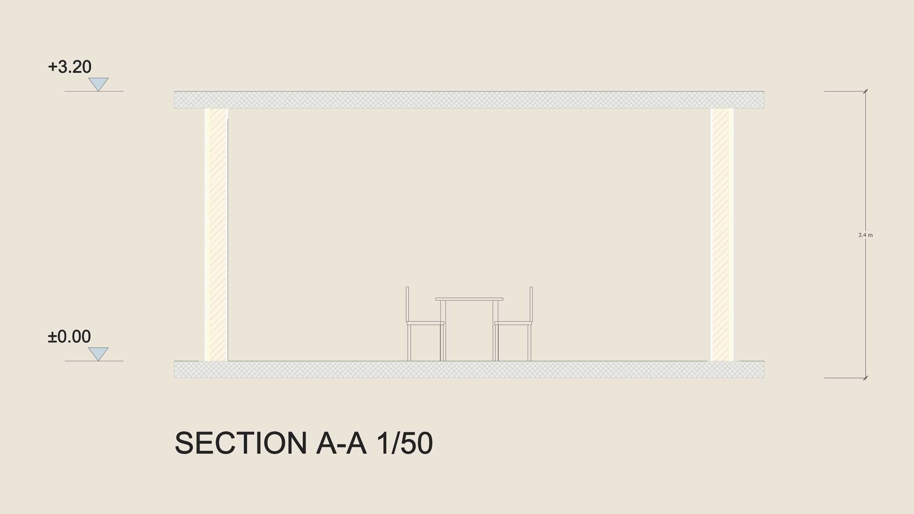

Place a section plane with SketchUp's Section Plane tool, select it and run Section Sheet: the section is drawn flat beside the model at full size, so a 1/50 print is the drawing — every solid the plane crosses filled and hatched by what it is made of (concrete, masonry, insulation, plaster, timber, read from its material), what stands beyond within 6 m in thin lines, the levels (±0.00 and every slab's top), the overall height and a title; a level plane makes a plan at its height. Select groups with the plane to cut only them. Run it again for the same plane and the sheet is drawn again in its place. One group on the tag ARQO Section Sheet, one Undo; the model and its scenes are not touched.

